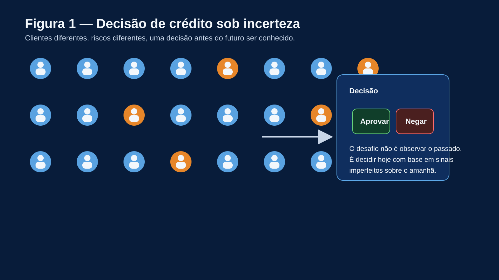
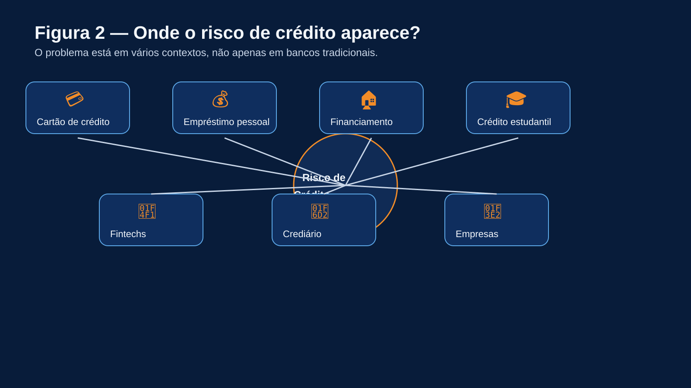
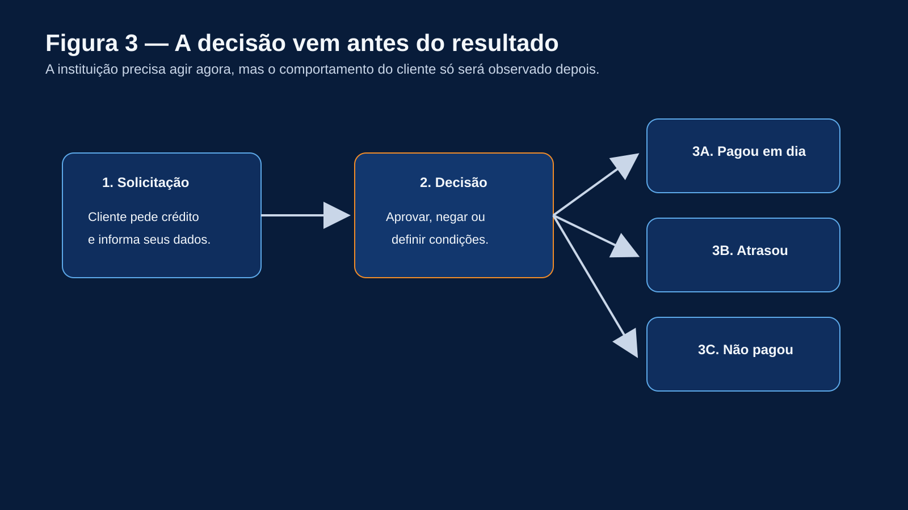
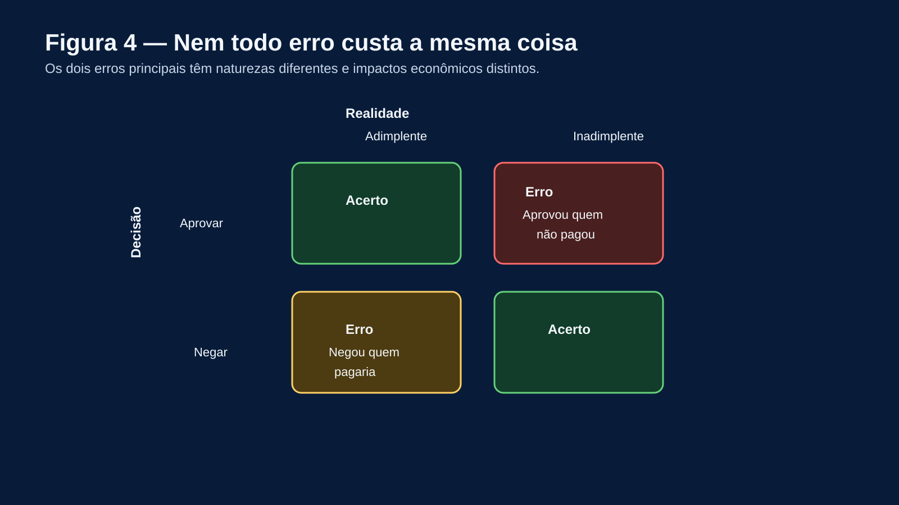
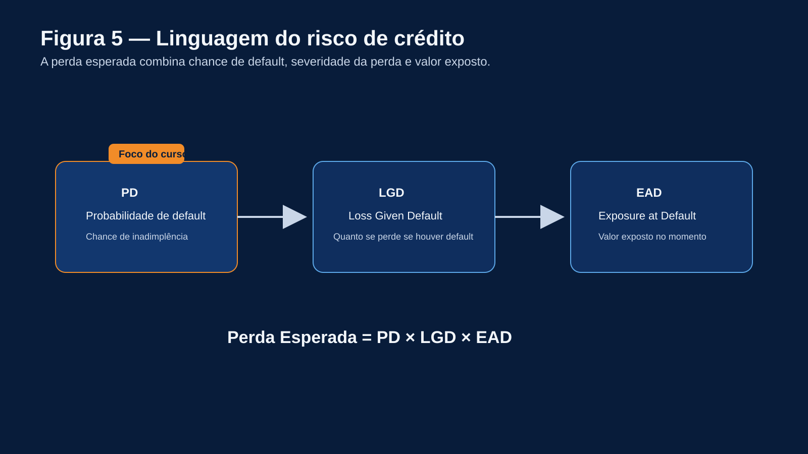
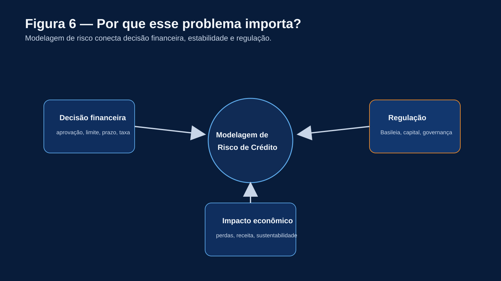
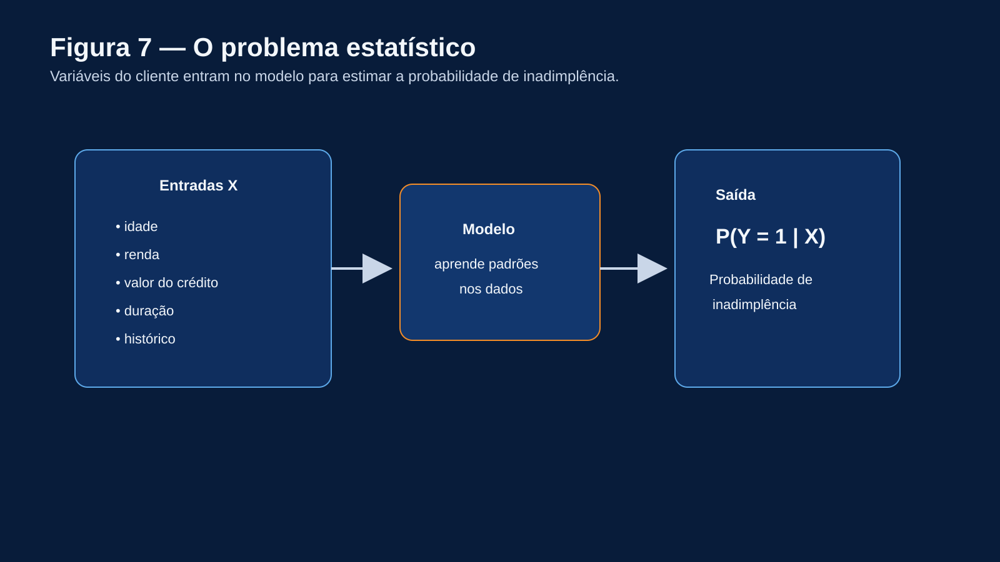
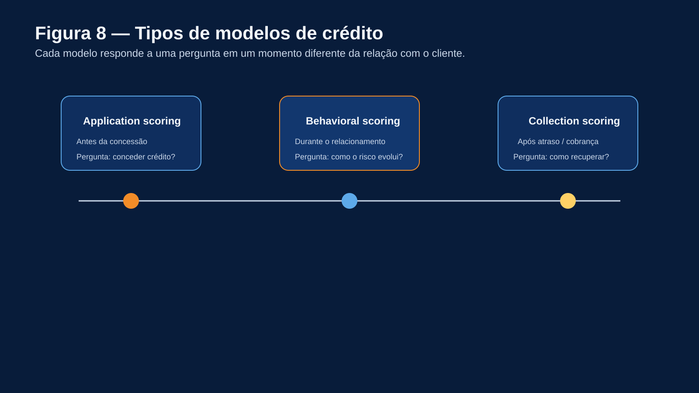
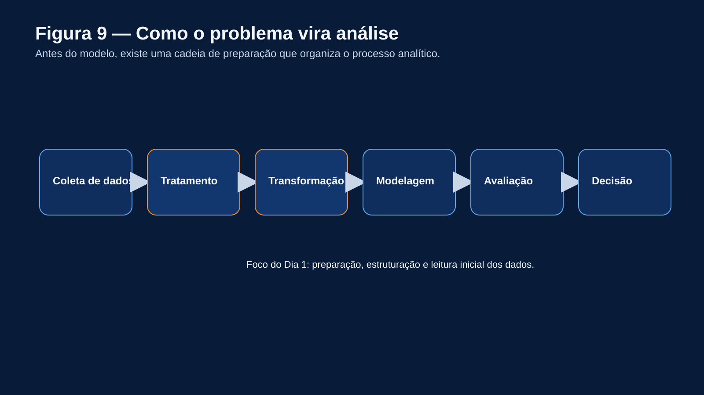
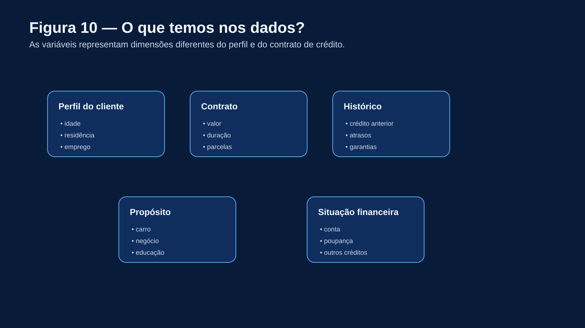

Introdução à Modelagem de Risco de Crédito
Dia 1 — do problema real aos dados
Introdução à Modelagem de Risco de Crédito
Dia 1: do problema real aos dados
Minicurso introdutório para Estatística e Ciência de Dados
Python + Google Colab

Onde esse problema aparece?
O risco de crédito está presente em diversas situações:
- empréstimos pessoais
- cartão de crédito
- financiamento
- crédito estudantil
- fintechs
- crediário
- análise para empresas
Pergunta central:
Dado um cliente, qual é o risco de inadimplência?

Uma decisão simples na aparência
Uma instituição financeira recebe pedidos de crédito.
- 1000 clientes solicitam crédito
- parte paga corretamente
- parte atrasa
- parte não paga
A decisão precisa ser tomada antes de observar o resultado.
Perguntas:
- Quem aprovar?
- Quem rejeitar?
- Em quais condições?

Nem todo erro custa a mesma coisa
- Aprovar cliente inadimplente → perda financeira
- Negar cliente adimplente → perda de receita
Insight:
O objetivo não é eliminar erros, mas minimizar o impacto econômico.

A linguagem do risco de crédito
\[
\text{Perda Esperada} = PD \times LGD \times EAD
\]
- \(PD\): probabilidade de default
- \(LGD\): perda dado o default
Foco do curso: modelagem de \(PD\).

Por que esse problema é importante?
- decisões financeiras reais
- impacto econômico direto
- necessidade de consistência
Contexto regulatório (Basileia).

O problema estatístico
\[
Y =
\begin{cases}
1, & \text{inadimplente} \\
0, & \text{adimplente}
\end{cases}
\]
Objetivo:
\[
P(Y=1 \mid X)
\]

Tipos de modelos de crédito
- Application scoring
- Behavioral scoring
- Collection scoring
Cada modelo responde a uma pergunta diferente.

Como o problema vira análise
- coleta de dados
- tratamento
- transformação
- modelagem
- avaliação
- decisão
Hoje: foco na preparação.

Base de dados utilizada
Dataset: credit-g (OpenML)
- acesso direto via Python
- classificação de crédito
- variáveis reais
Ver chunk_1
O que temos nos dados?
- idade
- duração do crédito
- histórico
Cada variável pode indicar risco.

Definição da variável alvo
- 1 → inadimplente
- 0 → adimplente
Problema de classificação binária.
Ver chunk_2
Distribuição da variável alvo
Ver chunk_3
Figura 11
Dados desbalanceados
- maioria paga
- poucos entram em default
Problema:
Figura 12
Um modelo pode ser inútil
Se 90% pagam:
- prever sempre “bom” → alta acurácia
Mas:
Acurácia pode ser enganosa.
Divisão da base de dados
Teste não pode ser usado no treinamento.
Figura 14
Dividindo os dados
Ver chunk_4
Exemplo: agrupando idade
Ver chunk_5
Figura 16
O que aprendemos hoje
- risco é decisão sob incerteza
- erros têm custos diferentes
- dados são desbalanceados
- divisão correta é essencial
- transformação impacta o modelo
Próximo passo:
Modelagem e avaliação